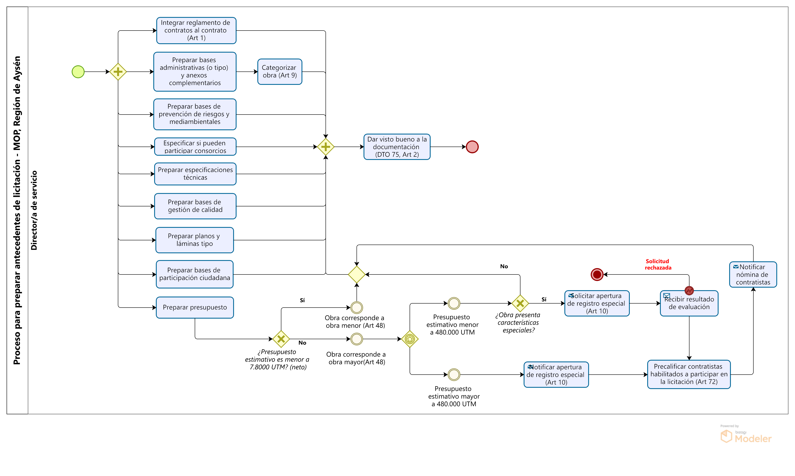
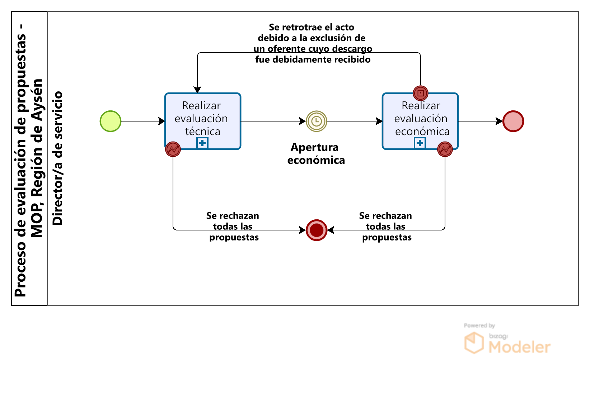

Fase de licitación y adjudicación de contratos de obra pública
Fecha de publicación:
La fase de licitación y adjudicación de contratos de obra pública, toma como entrada el programa base de las iniciativas de inversión a desarrollar durante el año prsupuestario vigente, establecido por el Programa Público de Inversiones Regionales (PROPIR) aprobado por el Congreso Nacional en el mes de diciembre del año previo durante la aprobación de la Ley de Presupuestos.
Para la adjudicación de cada iniciativa contemplada en el PROPIR, se realiza un proceso de licitación, procedimiento que consiste en la solicitud de cotizaciones de proponentes inscritos en el Registro General de Contratistas, para la posterior ejecución de la obra.
Previo a la licitación, las Direcciones deben preparar los antecedentes relacionados a la ejecución de la obra y otros elementos que formaran parte del contrato una vez adjudicado. Estos antecedentes conformaran las bases de la licitacion a presentar a los proponentes una vez hecha su publicación en el Mercado Público. Además, se deben hacer las gestiones para la solicitud y recepción del Decreto Supremo que establece y autoriza la cantidad de fondos a utilizar en la ejecución del contrato.
Teniendo listo los documentos de la licitación y la recepción del Decreto Supremo, la Dirección puede prosiguir con la publicación de las bases o documentos de la licitación en la plataforma de Mercado Público. Aquellas empresas contratistas registradas en el Registro General de Contratistas, podrán visualizar y postular para la adjudicación del contrato, por medio de la presentación de su propuesta, conformada por una propuesta técnica y económica. Ante el escenario que la licitacion no reciba ninguna propuesta, esta se declara desierta, habilitando a la Dirección a realizar una licitación privada, reformular las bases para volver a realizar la publicación o postergarla.
Llegada la fecha de apertura, se procede con la evaluación de todas las propuestas recibidas, teniendo por objetivo la selección de aquella que sea la mas conveniente para el Fisco. Sin embargo, la autoridad que adjudica, tiene la facultad de rechazar todas las propuestas presentadas, siempre y cuando esta sea debidamente fundamentada. Además, la resolución que da constancia de la adjudicación del contrato, debe resolverse dentro de los 60 días siguientes a la fecha de apertura, en caso contrario, los proponentes estaran habilitados de hacer retiro de sus propuestas. Para evitar el retiro, la Dirección puede entablar conversaciones con los proponentes, en donde se deje constancia que el proponente no hará retiro de su propuesta, quedando este a la espera de los resultados de la evaluación.
Preparar antecedentes de licitación
Publicar licitación

- La licitación de comienzo con la recepción del Decreto Supremo que indica el monto máximo del contrato (o que este en tramitación) y con la documentación de la licitación lista para su publicación.
- Previo a la publicación de la licitación en Mercado Público, se debe realizar su autorización.
La autoridad que tiene la facultad para autorizar su publicación, dependera del monto del presupuesto
del contrato, tal como indica el Decreto 1093 del MOP sobre el reglamento de Montos de contratos de obras públicas.
Autorización para licitación pública o privada con trámite previo de licitación pública Autoridad Monto del Contrato [UTM] Director General con V°B° del Ministro de OOPP Igual o superior a 300.000 Director General Igual o superior a 200.000 e inferior a 300.000 Directores Nacionales con V°B° del Director General Igual o superior a 150.000 e inferior a 200.000 Directores Nacionales Inferior a 150.000 Jefe de Oficinas Regionales con V°B° de SEREMIS Inferior a 120.000 Autorización para licitación privada sin trámite previo de licitación pública, trato directo, administración delegada o directa Autoridad Monto del Contrato [UTM] Director General con V°B° del Ministro de OOPP Hasta 10.000 Director General Inferior a 8.000 Directores Nacionales con V°B° del Director General Inferior a 6.500 Directores Nacionales Inferior a 5.000 Jefe de Oficinas Regionales con V°B° de SEREMIS Inferior a 3.500 - Las bases deben indicar la fecha para la presentación de propuesta, respetando
los siguientes plazos mínimos entre la publicación del llamado y su fecha de apertura.
Los plazos previamente mencionados pueden verse modificados por la autoridad que llama a licitación, ante circunstancias especiales debidamente certificadas.Costo total estimado [UTM] Días Menor a 1.000 15 días Entre 1.000 y menos de 20.000 30 días Entre 20.000 y 80.000 45 días Mayor a 80.000 60 días - La publicación de la licitación consiste en subir la documentación en la plataforma de Mercado Público, espacio desde donde los proponentes interesados puedan visualizarlos y formular su propuesta.
- La recepción de propuestas se realiza por medio de la plataforma de Mercado Público.
- El periodo entre la publicación y la apertura se denomina "periodo de serie de preguntas y respuestas". En este periodo de tiempo pueden surgir circunstancias que deriben a la actualización de los antecedentes de la licitación y/o una reevaluación de la iniciativa producto de un aumento en el presupuesto.
- Previo a la fecha de apertura, el Secretario/a Regional Ministerial debe designar a los integrantes que formaran parte de la comisión de apertura y al funcionario que pretende nomminar como el Inspector Fiscal de la obra.
- El funcionario que se pretende nominar como Inspector Fiscal, debe analizar el proyecto previo a su adjudicación para la confección de un informe de inspeccionabiliad, el cual se debe remitir a la Comisión de Evaluación.
- Una vez llegada la fecha de apertura no se reciben mas propuestas y se procede con su evaluación técnica y económica.
Situaciones a considerar
- Llegada la fecha de apertura, puede darse el escenario de no haber recibido ninguna propuesta, declarando la licitación como desierta. Frente a esta situación, la Dirección puede reformular la licitación, optar por una licitación privada o postergarla.
- Contratistas inscritos en una categoria del registro, pueden participar en licitaciones del mismo registro con categoria inferior.
- Contratistas inscritos en el Registro de Obras Mayores pueden participar en licitaciones de obras estipuladas en el Registro de Obras Menores, de acuerdo a lo indicado en la tabla de equivalencias entre los registros de contratistas.
- Contratistas pueden participar en obras en una categoría inmediatamente superior a la cual estuviesen inscritos, siempre y cuando el presupuesto estimativo sea equivalente corresponda a un máximo del 30% del rango de la categoría inmediatamente superior con respecto a la actual en la que estuvieren registrados.
- Para licitaciones en las cuales se abrió un Registro Especial, solo podran participar aquellos contratistas que hayan sido aceptados en ese Registro
- Para que un contratista pueda participar en una licitación, deberá acreditar una capacidad económica mínima disponible equivalente al 10% del presupuesto oficial o estimativo, según proceda.
Evaluar propuestas
 La evaluación de propuestas se subdivide en dos etapas:- Evaluación técnica: Se verifica la recepción de todos los antecedentes solicitados en el proyecto, para su posterior análisis a fin de verificar que la propuesta cumple con todos los requisitos técnicos exigidos por el proyecto.
- Existe un plazo entre la apertura técnica y la económica. Si los documentos de la licitación no establece el plazo entre los dos actos, se entendera que este último se realizara diez días hábiles después de la apertura de las ofertas técnicas.
- Evaluación económica: Se procede a la apertura de las ofertas económicas de aquellas propuestas técnicamente aprobadas, dando a conocer los valores totales cotizados por cada proponente. Luego, se realiza un análisis de la oferta económica, buscando cotejar la consistencia entre la oferta técnica y el análisis de precios, de acuerdo a la metodología estipulada en los documentos de licitación.
- Finalizada la evaluación económica, se redacta un informe de adjudicación, donde se indica a aquel proponente que se adjudica el proyecto.
Situaciones a considerar
- Durante la evaluación, puede derivar al rechazo de todas las propuestas con expresión de causa, dejando el proceso de licitación sin un adjudicatario. Frente a esto, la Dirección puede reformular la licitación, optar por una licitación privada o postergarla.
- Tambien se puede dar el escenario donde un proponente levante un reclamo frente al rechazo de su propuesta durante la evaluación técnica. Si su reclamo es aceptado, ya sea por la Dirección o la Contraloría General de la República, se debe retrotraer el acto desde la evaluación económica a la técnica, a fin de considerar la oferta del proponente con las demas durante la evaluacion económica.
- El MOP puede realizar cambios al formulario especial para la oferta económica hasta un plazo de tres días hábiles previa fecha de apertura.
- La forma de presentar la propuesta económica, deberá estar estipuladas en las bases de la licitación, pudiendo ser esta por administración delegada, por serie de precios unitarios, por suma alzada o una combinación de estos dos últimos. Se podrá incluir valores pro forma y globales fijos.
- La propuestas que entreguen los contratistas pueden presentar variantes que presenten algún beneficio para el Fisco.
Evaluación técnica

- Llegada la fecha de apertura de la oferta técnica, la Comisión de Apertura abre cada una de las ofertas técnicas y verifica la inclusión de todos los antecedentes solicitados en los documentos de la licitación.
- Revisadas las propuestas, la comisión formaliza el cierre del acto por medio de la firma del acta de apertura técnica, donde se emiten comentarios u observaciones producto de la verificación de los antecedentes solicitados.
- Verificada la inclusión de los antecedentes solicitados, la Comisión de Evaluación realiza un análisis de las propuestas, constatando el cumplimiento de los requisitos técnicos establecidos en los documentos de la licitación y de la capacidad económica mínima disponible del proponente. Resultado del análisis, se califican las propuestas como técnicamente aceptables o rechazables.
- Terminado el análisis y calificación de todas las propuestas, se procede con la redacción y emisión del informe donde se indican todas aquellas propuestas rechazadas, dando por terminada la evaluación técnica de propuestas.
Situaciones a considerar
- Los proponentes pueden levantar reclamos ante las observaciones y/o rechazos de sus propuestas, pudiendo llegar a dilatar el subproceso de evaluación de las propuestas en caso de que estas sean acogidas durante la evaluación económica de las propuestas. Estas pueden ser realizadas en la plataforma de Mercado Público o por la Oficina de Partes del Servicio.
- Con la emisión del informe de las propuestas rechazadas, la Comisión de Evaluación puede rechazar todas las propuestas presentadas, dejando el proceso de licitación sin proponente adjudicatario. Frente a esto, la Dirección puede reformular la licitación, optar por una licitación privada o postergarla.
- Si la cantidad de ofertas técnicamente aceptables son inferiores a tres, la autoridad pertinente puede rechazar todas las ofertas con expresión de causa.
- Ante la situación de que la adjudicación del contrato se realice por trato directo, la Dirección deberá velar que las empresas convocadas no se encuentran relacionadas, por medio de la consulta del Registro de Contratistas.
Sanciones
- Si la Comisión de Evaluación detecta la participación de contratistas relacionados en una misma licitación, se excluira su participación. Además, la Comisión del Registro sancionara a los contratistas con una suspensión del Registro por un plazo de cinco años.
Evaluación económica
- Si los documentos de la licitación nada dicen respecto a la fecha de la apertura de la oferta económica, se dara por entendido que este acto se realizará diez días hábiles después de la apertura de las ofertas técnicas.
- Durante la apertura económica, la Comisión de Apertura debe informar a los proponentes sobre los resultados de la evaluación técnica. Ademas, debe abrir las ofertas económicas solo de aquellas propuestas técnicamente aprobadas. Finalmente, se debe formalizar el cierre de acto con la firma del acta de apertura de la oferta económica. El desarrollo de todas actividades se realizan en la plataforma de Mercado Público.
- Verificada la inclusión de los antecedentes solicitados para la oferta económica, la Comisión de Evaluación procede a comprobar la consistencia entre la oferta económica y técnica.
- Constatada la consistencia entre las dos propuestas, la Comisión de Evaluación procede a la redacción y emisión del informe de adjudicación a la autoridad correspondiente con la propuesta mas conveniente, economicamente, para el Fisco. La selección de la propuesta consiste en una pre-selección para una posterior validación artimética de la oferta pre-seleccionada.
- La autoridad que adjudica (SEREMI o el Director General, depende del monto del contrato), en caso de no tener observaciones al informe de adjudicación, procede la comunicación de los resultados a los interesados.
Situaciones a considerar
- Se puede retrotraer el acto a la evaluación técnica si es que, durante la evaluación económica, se acoge un reclamo emitido durante esta última.
- La Comisión de Evaluación puede retrotraer el acto desde la emisión del informe de adjudicación al análisis de la oferta económica si se acoge un reclamo recibido durante la apertura económica.